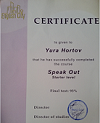

About me
I’m 34 years old. I’m married and have a son.
I went to the courses because my work stopped bringing me satisfaction, it became
uninteresting to me.
Many friends I know have retrained in IT, I've seen what they do and I liked it and I decided
that I can do it too.
Education
I graduated from BNTU with a specialty: automated electric drive has.
At the moment I am taking courses at RSSchool
Work I work in JSC “ Plant of special automatics”. As an engineer.
Languges
- Russian
- Belarusian
- English ===>>> (Starter Level)
